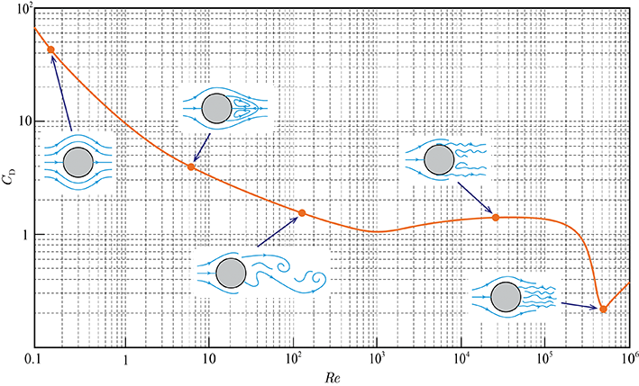

At $Re \ll 1$
Fluid flows over the cylinder and converges at the rear. The flow is nearly symmetric but has higher pressure on the windward side. Viscous force balances pressure force, inertia is negligible -> creeping flow. Both pressure drag and frictional drag are very large, giving a significant drag coefficient
At $Re \sim 1$:
Near-wall velocity gradient increases roughly linearly with freestream velocity, so frictional drag $\propto V$. Drag coefficient $\approx V^{-1}$ (inversely proportional to freestream velocity or Reynolds number)
At $1 < Re < 10^{3}$:
Flow separation occurs on the rearward surface; pressure drag dominates and increases as the separation point moves forward. Drag coefficient declines gently, $\propto V^{-0.5}$
At $10^{3} < Re < 3 \times 10^{5}$:
Pressure drag $\gg$ frictional drag. Laminar boundary layer separates at a fixed point of about $82^{\circ}$ from the stagnation point. Drag coefficient nearly independent of $Re$
At $Re \approx 3 \times 10^{5}$:
Drag drops sharply as the boundary layer becomes turbulent before separation. Turbulent layer resists separation, so flow separates further downstream (about $125^{\circ}$). Rear low-pressure region shrinks $\rightarrow$ pressure drag drops sharply
At $Re > 3 \times 10^{5}$:
Separation point stays fixed. Pressure drag nearly constant, but rising frictional drag increases drag coefficient
Historically, the phenomenon of the drag dropping sharply above a certain Reynolds number has been known as drag crisis
1Hongwei Wang (2023). A Guide to Fluid Mechanics. National Defense Industry Press.